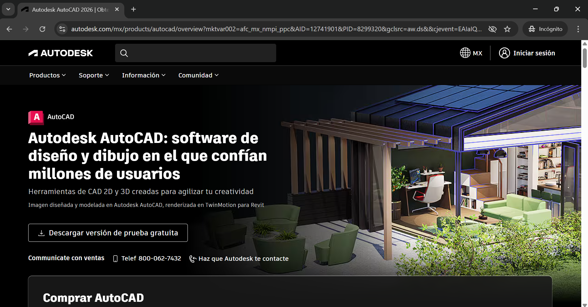
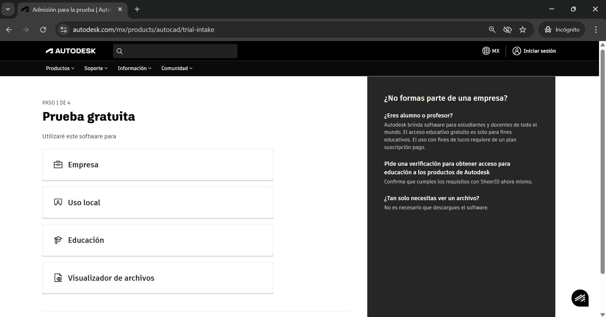
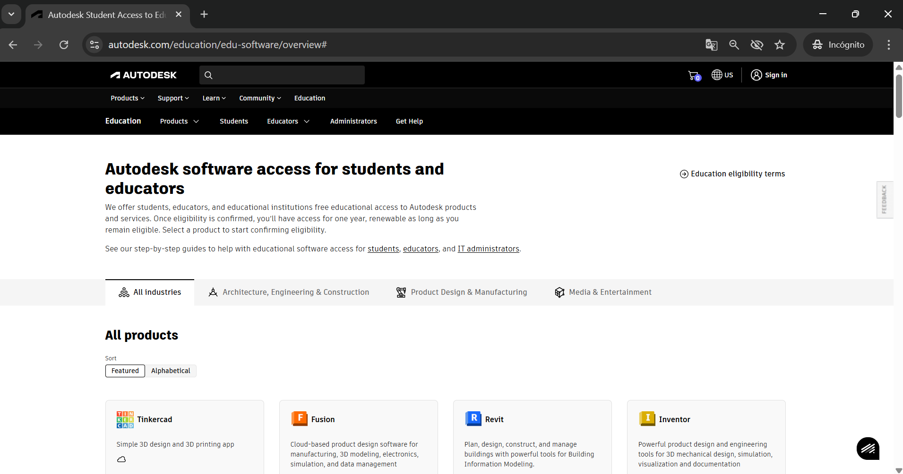
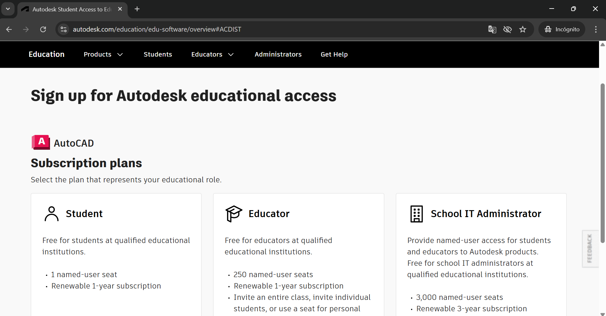
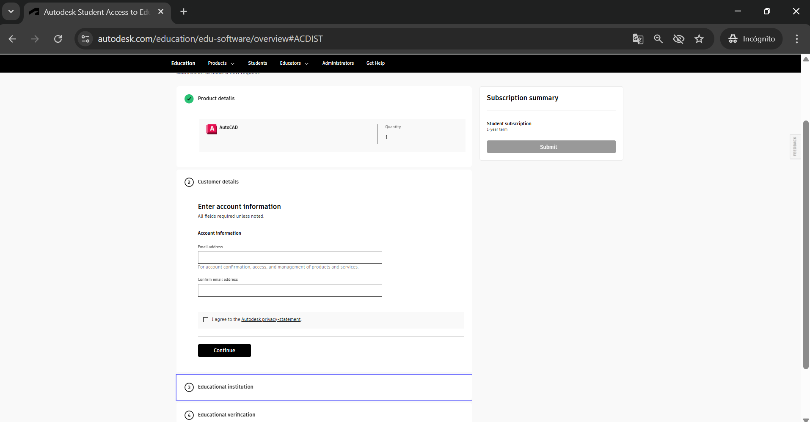
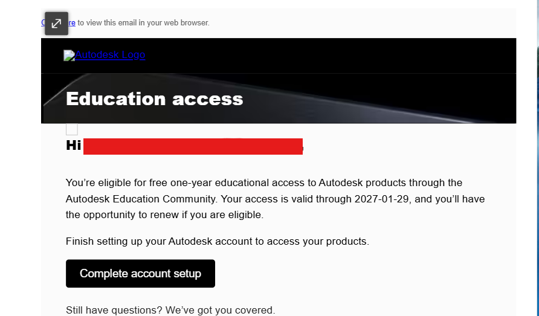
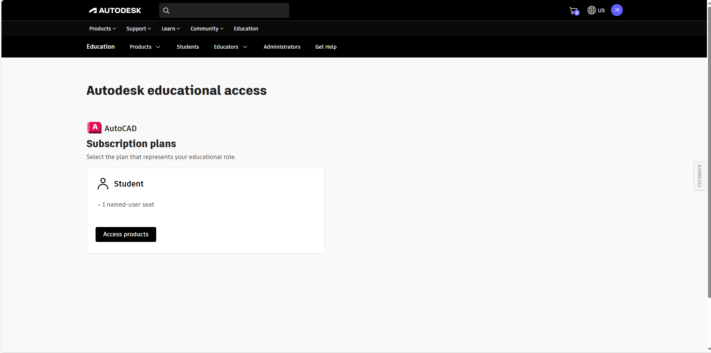
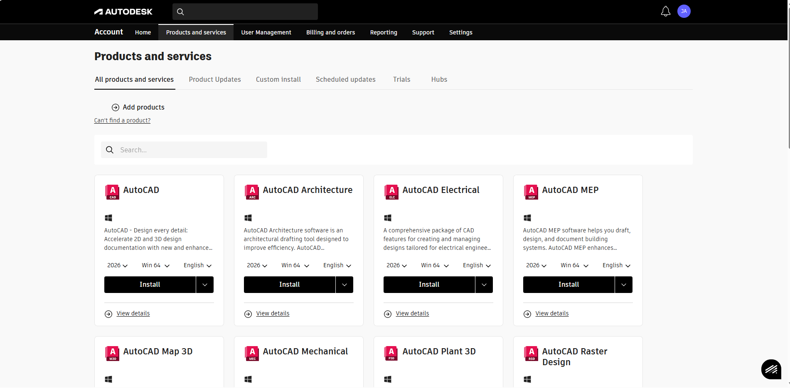
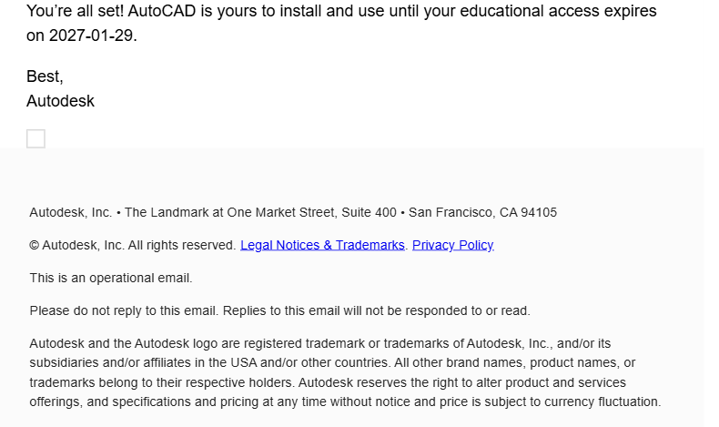

Guía paso a paso para instalar AutoCAD desde Autodesk
Abre tu navegador web y ve al sitio oficial de Autodesk.
 Ir a AutodeskEn el botón de descargar dar clic.
Se visualizarán los productos correspondientes; selecciona AutoCAD.
Autodesk te pedirá elegir el paquete: estudiante, docente o institución.
Llena datos como correo institucional, institución y nivel educativo. Autodesk validará la información.
Confirmarás tu correo institucional, descargarás AutoCAD y lo instalarás. Inicia sesión al final.
  Se te mandará un correo indicando la vigencia de tu licencia.
